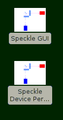
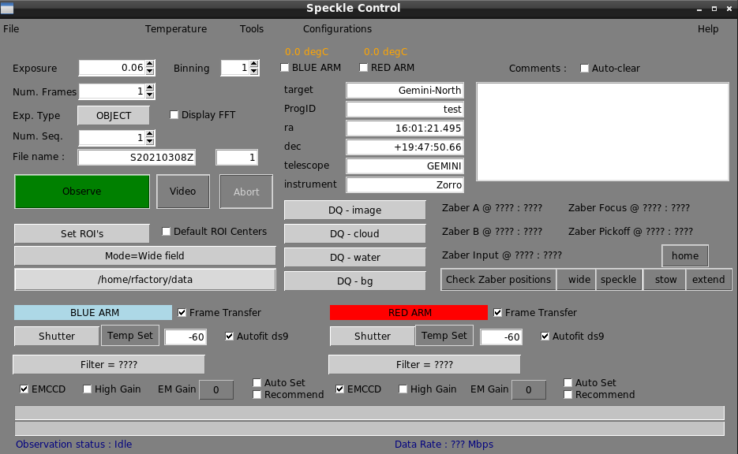
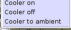
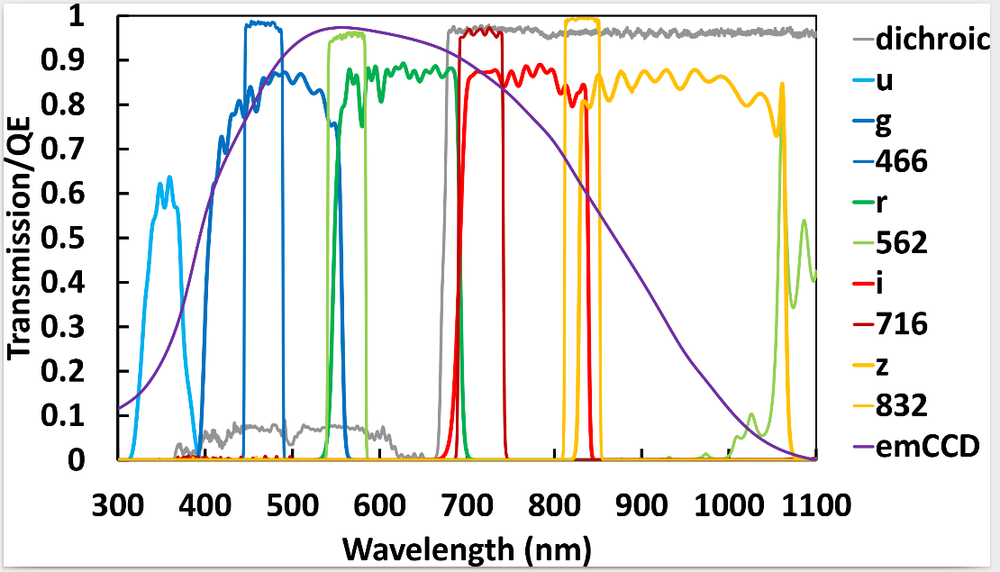
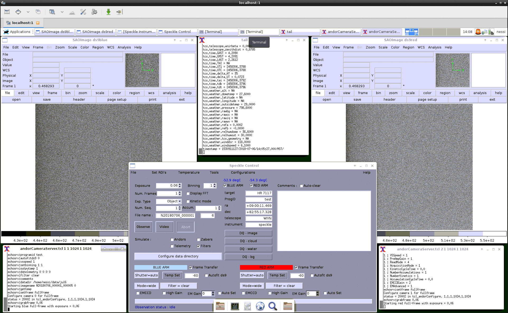
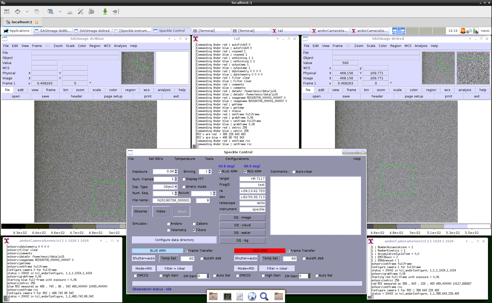
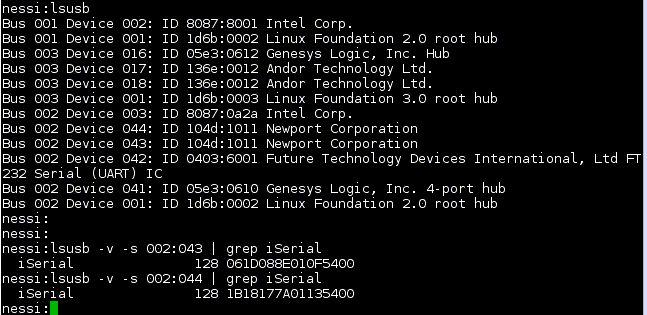
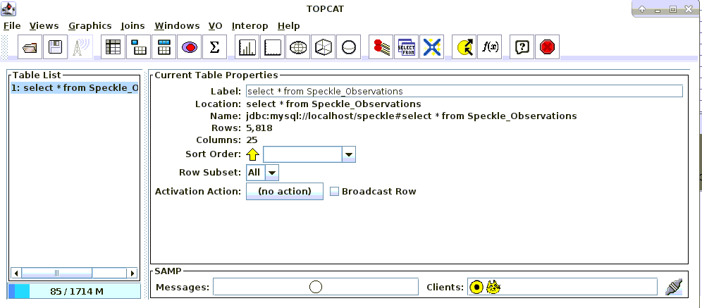

Speckle Instrument GUI - Linux User Guide
Dave Mills (rfactory@theriver.com) – February 2021
Table of Contents
3. Graphical user interface. 4
Filter Transmission & Efficiency Curves 9
3.3.1 Number of Image Sets to Acquire Per Target 14
6.1 Recompiling the shared libraries (Non Ubuntu only) 20
The Speckle Instrument GUI has been developed by Dave Mills (The Random Factory, Tucson, AZ) in collaboration with the Speckle Instrument PI (Steve Howell) and collaborators (Nic Scott, and Mark Everett - KPNO). It provides comprehensive control over each hardware component, and the ability to acquire single frame or Data cube (time series) Observations in multiple sequences, filters, binning factors, and image geometries. Observation metadata is logged in the image headers, and also in a local database.
The GUI and accompanying sources can be obtained from the Github repository.
cd $HOME
git clone https://github.com/therandomfactory/speckle-control
These commands will place the files in the directory $HOME/speckle-control. Although it is possible to install the software to a different location, this is not recommended as it will be necessary to manually change the location in some of the scripts included with the drivers.
Run the software and drivers installation script
cd $HOME/speckle-control
sudo ./install
Configure the USB devices for rw access
cd $HOME/speckle-control
./setDevicePermissions
For a completely new installation, refer to section 7 of this guide.
Once this setup has been completed, the interface can be started with the command
~/speckle-control/startspeckle2
These USB permissions can also be set using the desktop icon, and the program can also be launched with an icon double-click as well.

To check for Speckle software updates , run the script,
$HOME/speckle-control/checkUpdate
if an update is available you will be offered the option to install it and the Andor camera
drivers.
If an Andor SDK update is available , run the script,
$HOME/speckle-control/andorUpdate
which will download and install it, and rebuild any software as necessary.
The graphical user interface provides easy access to the major functions such as image acquisition, temperature control, and device setup and configuration.
The program will open a small main window, and then create a message window which shows the progress of the system startup operations.
Once the message window closes, the system is ready for use. The cameras are initialized, and temperature control has been switched on.
Three terminal log windows appear at the bottom of the screen, left and right are per camera, and the central one is the general observation log.

Most of the time the controls in
this window will be the focus of observing activities.
The following elements are provided :
This menu provides quick setup for a range of commonly used observing
or setup configurations. Each is a simple script (the sources can be found in
$HOME/speckle-control/config-scripts, and any new scripts which are added
to this directory will be available as menu options after a GUI restart)

This menu provides control over the camera cooler usage. Cooling may be
switched on or off, and the “ramp to ambient” option may also be selected
(this is also automatically applied when the camera is shutdown).
The actual temperature setpoints are individually controlled using entry boxes in the main window.
This menu provides control over the data acquisition geometry. A range of ROI (Region of Interest) sizes can be selected, or the geometry can be reset to include the full frame. If an ROI is chosen, then an image will be taken with each camera , and a default ROI of the requested size will be automatically generated centered on the brightest target
in the image(s). If it is necessary to manually adjust the calculated ROI's, then select that option and then use the ds9 controls to move them, and then click OK on the dialog.
It is also possible to set default per camera ROI centers in the
andorsConfiguration.<telescope>
configuration file. If the Default ROI Centers checkbox is selected then the ROI’s will be positioned so their centers are at the pixel coordinates specified in the configuration file.
This menu provides access to a set of commonly used options. There are four main types of item , GUI window visibility/mode, Zaber stage motions, pop-up windows, and resetting hardware components.

The “Engineering” option re-sizes the main window to make visible an extra set of
controls generally used for equipment characterization and setup.

The detailed readout parameters of each camera can be manipulated, and the Zaber station positions edited and loaded/saved. For Gemini, extra controls for the Focus and Pickoff stages, and the pico motors are also included.
The “Observing” option returns the main window geometry to the default , hiding the Engineering controls.
The “Filter Selection” option opens the Filter Wheel control window.

This provides options to rename filters and load/save the configurations. There is a placeholder for providing focus offset but this is not yet implemented. There are also options to set different exposure times for each filter; this is an experimental feature and will not play well with the display of Observation Status progress bars.
Speckle instruments use a dichroic beamsplitter to separate the incoming light (at 686nm) into blue and red channels before focusing on the two identical cameras, which operate simultaneously. The speckle filter choice will be one of 467nm or 562nm paired with one of 716nm or 832nm. NESSI's SDSS filters are also listed below (although not used for speckle imaging). Data are in nanometers and fractional efficiencies as quoted by the manufacturer.

The two Gemini instruments are equipped with these filters.

The “Camera Status” option opens a window showing the current settings of the main

camera
configuration and readout parameters. The values are updated after
each
observation, or when the Refresh button is clicked.
The “Plot timings” option opens a file selection dialog. Selecting a data cube image-name will plot the time history of that cube's exposures (delta times with 0 = 1st frame time).

The stored data in the FITS table is in seconds (system clock time)
The plotted data can also be examined in the file /tmp/timings after a plot.

Options to open/close the Mimic diagram, Camera status, and Filters windows.
A set of the options to command the motion of the relevant Zaber stages to the requested position(s). Feedback on the positions can be seen in the Mimic diagram, and in the debug log window.
Other options control whether separate per filter exposure times are allowed (experimental), and control over resetting various hardware components in case of problems.
The Show/Hide Accumulate options control whether the corresponding control is visible.
Audio notifications (at end of observation) may be switched on or off.
The ds9red/ds9blue options restart the corresponding image viewers if they have crashed.
The Watch Log option opens a log window which tracks the FITS headers of the observations.
The View Database option opens a terminal connected to the local observations database (accepts Mysql queries)
The Mimic diagram window shows the at-a-glance configuration of the instrument.

The top left section of the main window contains a group of controls related to the sequencing and initiation of observations.
The Exposure time can be specified ( in seconds) using the spinbox , or a value can be typed into the entry box area.
The Num Frames to take can be specified using the spinbox, or a value can be typed into the entry box area. If greater than 1, this specifies the number of exposures in each datacube. In this mode an array of (TAI) timing information about the exposures is also included in the FITS file as a Binary table Extension.
The Exp Type menu can be used to select common exposure types. Dark, Flat, etc.
This has little effect except over the shutter control, but the type is recorded in the image headers.
The Num Seq spinbox can be used to repeat a set of observations multiple times.
The Accum spinbox can be used to select the number of exposures to be accumulated before each camera readout. The exposures are thereby “co-added” by the camera (the visibility of this option is selected using the Tools menu options). This is normally used in conjunction with time series (datacube) operations.
The File name entry box is used to specify the base name for the FITS files. It will be expanded to add Sequence and Frame number where appropriate as the files are stored.
The current frame number is shown to the right , and will auto-increment as data is taken.
The Observe button start a sequence of observations (can also be just a single frame).
The Video button starts a display only sequence , it must be canceled using the Abort button before data acquisition Observations can commence.
The Binning spinbox controls the binning factor in both x and y dimensions.
The Display FFT option chooses whether to display the raw image data, or to display an FFT of the data instead.
The right side of the main window is focused on the meta data which will be included in the FITS headers. Some of this is automatically populated with data from the Telescope telemetry services. There are also menus for selecting a variety of Data Quality (DQ) specifications, and a comments area (this area may be flagged to auto-clear after each exposure if required). These are added to the FITS headers.
The current state of each camera (enabled, temperature) is prominently displayed top-center of the main window. Checkboxes can be used to enable/disable each camera.
A set of buttons provides quick access to check and set the Zaber stage positions.
The lower section of the window contains the major camera settings controls.
From here, the temperature setpoint, Filter, Shutter state, Frame Transfer mode, EM mode and gain can be changed. There are also options to enable EM gain advisory popups, and to Auto set the gain. A checkbox controls the display of the images in ds9 which can be set to autofit or not (zoom to displayed frame size)
The bottom of the window has two progress bars, the upper shows the progress of a sequence of frames in a datacube image, and the lower shows the number of sequences completed.
The performance of speckle imaging is quite sensitive to conditions like seeing, so there are no strict rules to follow for determining the ideal number of image sets to acquire on a target of given brightness.
Observers targeting stars fainter than V=13 should plan on acquiring multiple image sets and those observing brighter stars may also benefit from taking multiple sets. This will depend on how they balance better contrast depth/image quality vs. number of targets visited. Multiple image sets per star can also help under less than optimal observing conditions and, given the several minutes needed to set up observing of each new target, many users may want to devote comparable time to exposures.
Each image set requires 1 minute of telescope time. Acquiring a target with a short slew requires 3 minutes and with a long slew, 5 minutes. Since a science target requires a point source observation, additional time is needed for that (about 4 minutes). Refer to the guide on estimating observing time for more information.
Note that we have found the signal-to-noise ratio for detecting secondary sources in speckle images does not grow as rapidly with exposure time as it would in traditional CCD imaging (ie. with the square root of time). Proposers may not expect to achieve the same contrast limits on faint stars as bright ones (5 magnitudes may be achievable on 12th magnitude stars and 3 magnitudes on 14th magnitude stars.) The table below only suggests numbers of image sets to take for various magnitude stars:
|
V or R |
# image sets |
|---|---|
|
<12 |
1-3 |
|
12-12.5 |
3 |
|
12.5-13 |
5 |
|
13-13.5 |
7 |
|
>13.5 |
9 |
(Mark
Everett (everett@noao.edu).
A recommend desktop layout is illustrated below. The main visible components are
ds9red image viewer for the Red arm camera images.
ds9blue image viewer for the Blue arm camera images.
Top-center xterm showing the debug log.
Lower left xterm showing the Red camera server operations
Lower right xterm showing the Blue camera server operations.
Mid-screen main GUI window.


The
following example also show typical popup windows for the Mimic
diagram and Filter Wheels and Camera status windows.

This desktop shows an example of the appearance after an ROI selection , each ds9 window shows the chosen region, and the numeric parameters can be seen in the camera server log windows.

The Engineering mode (Tools menu) adds a set of low level controls to the bottom of the main GUI window
The detailed exposure modes for each camera can be set (Vertical transfer speed, Readout clock speed for EM and Normal readout modes, Horizontal transfer speed).
Low level control of the Zaber stages, and the ability to load and save new defaults.
For Gemini installations, control of the Focus and Pickoff stages, and a fine adjustment “jogger” for the Pico stage position.
In the lower left corner there is also a set of checkboxes to choose a Simulation mode for hardware which is non-operational or absent.
There is also a placeholder for a future feature to select GPS hardware timestamps (currently each datacube image also contains a FITS table containing the system clock times (double precision seconds) of the start of Acquisition time of each frame. These may be examined using the Plot Timings option on the Tools menu.
If you experience problems with operation of the software or particular hardware components, there are a set of options in the Tools menu. These can be used to Reconnect to the telemetry server, cameras, filter wheels, or zaber stages.
There is also a cleanRestart icon and script which will shutdown the software, power cycle the filter wheel, cameras and zaber stages, and then restart the software.
To shutdown the software, select Shutdown from the File menu. This will command the cameras to ramp up to ambient temperature and then close the camera control servers and GUI components.
All GUI controlled operations are logged to disk. The files are named according to the
cpu clock at the startup and stored in the /tmp directory.

A checkUpdates desktop icon and script are provided to automatically check for Speckle software updates (on github) , and optionally download and install them, recompiling sub packages as needed. These also perform and updates to the Andor drivers if needed.
You can also separately update just the Andor software using the andorUpgrade script.
The default install script assumes a Ubuntu Linux system. If it is necessary to rebuild the compiled code on a different flavor of Linux, the only component which might prove challenging is the VIPS package.
Low level functionality is provided in C/C++ for speed , and this code is
wrapped using tcl and loaded into the interpreter at runtime.
To move the code to a different version of Linux it may be necessary to
recompile the libraries in the following directories.
andor
ccd
filterWheel
guider
Each has either a Makefile (ccd, guider,vips) or a set of build steps (andor/buildlib , oriel/buildlib)
The Vips library may present more difficulty due to it's many dependencies.
The package can be normally be recompiled using the GNU standard incantations
./configure –prefix=/home/speckle/speckle-control --without-python
make install
If the configure step does not work , try
make AUTOCONF=: AUTOHEADER=: AUTOMAKE=: ACLOCAL=:
make install AUTOCONF=: AUTOHEADER=: AUTOMAKE=: ACLOCAL=:
If it becomes necessary to change out either Filter Wheel or Camera components, the appropriate configuration files will need adjustment. The configuration files are in the
$HOME/speckle-control directory
andorsConfiguration.[telescope]
filtersConfiguration.[telescope]
In each case the serial number information will need to be updated.
The Filter Wheel serial numbers can be found using the lsusb command
The other configuration files are less likely to need changes.
picomotorConfiguration.[telescope] controls Pico stage defaults
wcsPars.[camera].[mode].[telescope] control image world coord system
zabersConfiguration.[telescope] controls Zaber stage defaults

The camera servers automatically log information about each image to the a local
database (Mysql). The database is named “speckle” and the table name is
“Speckle_Observations”. It can be viewed using the mysql command line program.
e.g.
mysql –user=root speckle
select * from Speckle_Observations LIMIT 10;
Or using a Mysql capable tool e.g. the TOPCAT gui


SIMPLE = T / file does conform to FITS standard
BITPIX = 16 / number of bits per data pixel
NAXIS = 3 / number of data axes
NAXIS1 = 128 / length of data axis 1
NAXIS2 = 128 / length of data axis 2
NAXIS3 = 1000 / length of data axis 3
EXTEND = T / FITS dataset may contain extensions
COMMENT FITS (Flexible Image Transport System) format is defined in 'Astronomy
COMMENT and Astrophysics', volume 376, page 359; bibcode: 2001A&A...376..359H
BZERO = 32768 / offset data range to that of unsigned short
BSCALE = 1 / default scaling factor
CREATOR = 'Linux ANDOR CCD control V2' / Speckle Data-taking program
MJD-OBS = 58998.864815 / MJD at start of obs
JD = 2458999.36481 / Julian Date at start of obs
HDR_REV = '4.00 10-Feb-2020q' / Header-Rev
UTC = '20:45:19.9' / UTC time at end of observation
LAST = '02:54:46.6' / LSTHDR local sidereal time
EPOCH = 2000.000000 / EPOCH of telescope coords
TARGRA = 75.000000 / Telescope target RA
TARGDEC = 89.970000 / Telescope target DEC
RA = '02:53:48.402' / Telescope RA
DEC = '+19:39:24.95' / Telescope DEC
RAOFFST = -1296000.0000 / Telescope RA offset
DECOFFST= -0.000000 / Telescope DEC offset
ZD = 0.000100 / zenith distance
AIRMASS = 1.000000 / airmass at start of exposure
FOCUS = '-0.091 ' / Telescope focus (microns)
OBJECT = 'Zenith ' / Object name
PA = 0.000000 / Instrument position angle
IAA = 270.000000 / Instrument Alignment angle
CRPA = -180.000000 / Current Cass Rotator Position Angle
GUIDING = 'Off ' / Guide state
OBSERVAT= 'Gemini-North' / Originating Observatory
RELEASE = '2020-12-01' / End of proprietary period YYYY-MM-DD
INSTRUME= 'Alopeke ' / Instrument name
DATE-OBS= '2020-05-29' / Date of start of observation in UTC
TIMEOBS = '20:43:46' / from speckle.scope.timeobs
OBSTYPE = 'Object ' / Type of picture (object, dark, etc.)
TELESCOP= 'Gemini-North' / Specific system
RECID = '2020-05-29_Gemini-North"' / archive ID for observation
ACT = 0.008544 / Accumulation cycle time
EXPTIME = 0.007369 / Frame Exposure time in seconds
OBSTIME = 1590785111.7608 / UTC at start of observation
EXPENDTM= 1590785120.6196 / UTC at end of observation
HEAD = 'Andor iXon Emccd' / Head model
ACQMODE = 'Kinetics mode' / Acquisition mode
KCT = 0.008544 / Kinetic cycle time
KINMODE = '1 ' / Kinetic Mode
NUMEXP = '1 ' / from speckle.scope.numexp
READMODE= 'Image ' / Readout mode
IMGRECT = '1,1024,1,1024' / Image format
EMCCD = 'On ' / EMCCD mode
FRAMEXFR= 'On ' / Frame Transfer mode
BLCLAMP = 'On ' / Bias Clamp
HBIN = 1 / Horizontal binning
VBIN = 1 / Vertical binning
SUBRECT = '152,279,1,128' / Subimage format
EXPOSURE= 7.369000 / Total Exposure Time
EMGAIN = 0.000000 / EM Real Gain
VSSPEED = 1.130000 / Vertical Speed (usec)
HSSPEED = 1.000000 / Horizontal Speed (MHz)
OUTPTAMP= 'Electron Multiplying' / Output Amplifier
PREAMP = 1 / Pre Amplifier Gain
SERNO = 'X-10405 ' / Serial Number
UNSTTEMP= -60.000000 / Unstabilized Temperature
ACCUM = 1 / Accumulations per frame
NUMKIN = 1000 / Number of kinetic frames
FILTER = 'Blue-562' / Filter name
FLDZABER= 'wide ' / Field zaber position
INPZABER= 'wide ' / Input zaber position
CCDTEMP = -28.049999 / CCD temperature
RAWIQ = '0 ' / Image quality
RAWCC = '0 ' / Cloud cover
RAWWV = '0 ' / Water vapour
RAWBG = '0 ' / Background
HUMIDITY= '16.4 ' / from tcs.weather.humidity
OBSID = 'GN-2020A-FT-204' / Observation-ID
GEMPRGID= 'GN-2020A-FT-204' / Observation-ID
SPKLESEQ= 2 / SPECKLENFO-sequence
SPKLEDAT= 'May 29 10:45:21' / SPECKLENFO-timestamp
CRVAL1 = 19.656667 / Declination of reference pixel [deg]
CRVAL2 = 43.450000 / RA of reference pixel [deg]
CTYPE1 = 'DEC--TAN' / Coordinate type
CTYPE2 = 'RA--TAN ' / Coordinate type
CRPIX1 = 64 / Coordinate reference pixel in X
CRPIX2 = 64 / Coordinate reference pixel in Y
CDELT1 = 0.000000000000 / Rotation angle
CDELT2 = -0.000020138889 / Coordinate pixel scale in Y
CD1_1 = 0.000020138889
CD1_2 = 0.000000000000
CD2_1 = 0.000000000000
CD2_2 = -0.000020138889
WCSNAME = 'FK5 ' / World coordinate system type
RADECSYS= 'FK5 ' / Default coordinate system type
END
There is a rich set of commands to allow interactive and scripted usage.
To access the command line it is necessary to source the setup<telescope>
script from the speckle-control directory and then start the GUI manually e.g.
source setupGeminiS
wish
source gui-scripts/gui2.tcl
The following commands are available
Filter Wheel :
loadFiltersConfig [filename]
saveFiltersConfig [filename]
echoFiltersConfig
selectfilter arm filter-number
findWheels
resetFilterWheel arm
Zaber stages :
loadZaberConfig [filename]
saveZaberConfig [filename]
echoZaberConfig
zaberPrintProperties
zaberConnect
zaberDisconnect
homeZabers
zaberCheck
zaberSetPos name position
zabersStopAll
zaberGoto name station
Pico Stages : Gemini only
loadPicosConfig [filename]
savePicosConfig [filename]
echoPicosConfig
picosConnect
picoCommand axis cmd
picoSet axis parameter value
Andor Cameras :
Commands may be issued from the GUI command line, scripted , or optionally by
telnet to ports 2001, 2002 (also available when started in normal GUI mode).
When using the command line the syntax is
commandAndor arm “command and parameters” (where arm is red or blue)
or commandAndors “command and parameters”
When using the telnet connection, just type the command and parameters
accumulationcycletime seconds
acquisition index
autofitds9 0/1
baseclamp 0/1
comments comment1|comment2|....
configure hbin vbin vstart vend hstart hend preamp vsspeed ccdhss emccdhss
datadir data-directory
dqtelemetry rawiq rawcc raqwv rawbg
emadvanced index
emccdgain 0/1
fastVideo exposure xs ys dim
fitsbits data-format
forceroi xs xe ys ye
frametransfer index
gettemp
grabcube exposure xs ys dim
grabframe exposure
grabroi exposure xs ys dim
hsspeed amp index
imagename image-name
kineticcycletime seconds
locatestar smooth dim
numberaccumulations count
numberkinetics count
outputamp index
positiontelem input-zaber field-zaber filter
preampgain index
programid program-id
readmode index
reset mode
setexposure seconds
setframe mode
setroi mode
settemperature degrees
shutdown
shutter index
status
version
vsamplitude index
vsspeed index
whicharm